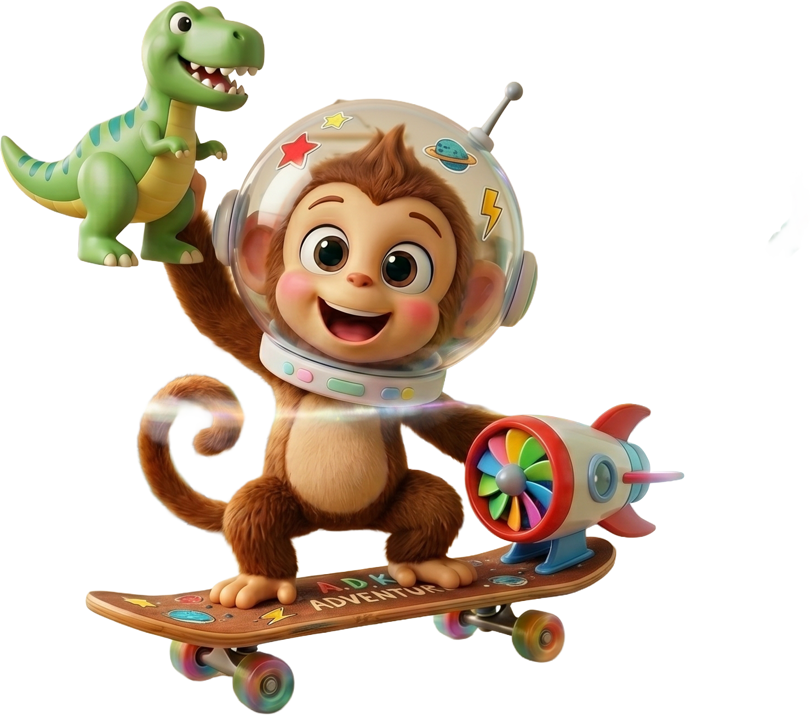
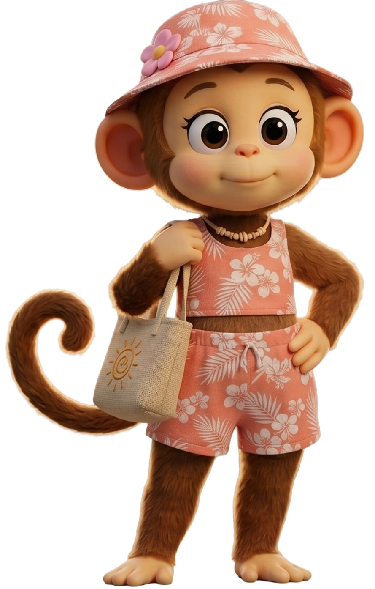

Mãe
Carinhosa e atenta, a Mãe acolhe, dá colo e ajuda o Kaco a entender o mundo no tempo dele. Um abraço seguro pra qualquer hora.
Ver histórias
.png)
.png)
.png)
.png)
.png)
.png)

O Kaco nasceu pequeno e cheio de afeto. No começo era só um experimento de um pai pro próprio filho autista. Histórias curtas, ilustradas, no ritmo dele, com personagens que ele aprendeu a reconhecer e amar.
No meio do caminho a gente percebeu que o que funcionava pro nosso filho funcionava também pra muitas outras crianças. Então o projeto abriu a porta: hoje o Kaco é pra qualquer criança com alguma necessidade especial. TEA, TDAH, atraso de fala, ansiedade, deficiência visual, deficiência auditiva. E pras famílias e terapeutas que caminham junto.
A gente continua fazendo no ritmo da vida real: devagar, com carinho, escutando quem usa. Cada história, cada personagem, cada ferramenta nasce de uma conversa.
Aqui nada é apressado. Se uma criança se sentir mais segura, mais entendida ou só um pouquinho mais feliz por causa do Kaco, então já valeu a pena. E é por elas que a gente segue, um passinho de cada vez.
Flávio Passos
Conhece a turma do Kaco. Cada um com seu jeito de ser.

Um macaquinho curioso que sente tudo com intensidade. Como toda criança, ele tem dias leves e dias difíceis. E é nas pequenas aventuras do dia a dia que ele aprende, no seu ritmo, a entender o mundo e a si mesmo.
Reconhecer o que a gente sente é o primeiro passo. O Kaco ajuda a dar nome.

É aquela energia quente no peito quando alguma coisa nos parece injusta ou quando não conseguimos fazer o que queríamos.
Respirar fundo. Contar até dez. Sair do lugar e voltar quando o corpo esfriar. Conversar depois, com calma.
Vem quando perdemos algo importante, quando sentimos falta de alguém, ou quando o dia não foi como esperávamos.
Falar com quem confia. Pedir um abraço. Desenhar ou ouvir música. Tudo bem ficar triste, isso vai passar.
Aparece quando algo bom acontece. O corpo fica leve, dá vontade de pular e contar pra todo mundo.
Aproveitar o momento. Dividir com alguém querido. Guardar essa sensação pra lembrar nos dias difíceis.
Aparece diante do que é novo, do escuro, do barulho alto, ou de alguma situação que parece grande demais.
Lembrar que não está sozinho. Segurar a mão de quem cuida. Falar o que está sentindo. Ir devagar, no seu ritmo.
É o susto de algo inesperado. Pode ser bom (presente, visita) ou difícil (mudança de plano).
Parar um instante e respirar. Perguntar o que está acontecendo. Pedir tempo se precisar entender melhor.
O corpo solto, a respiração tranquila. É quando nada está apertando por dentro e dá pra escutar tudo com mais clareza.
Aproveitar. Olhar com atenção pra um lugar, um som, um objeto. Lembrar como se chega aqui pra voltar quando precisar.
A rotina do dia, passo a passo, do jeitinho do Kaco. Saber o que vem agora deixa tudo mais tranquilo. Pais e terapeutas podem adaptar a sequência pra cada criança.
Modo de escutar pra quem cansa visualmente, está aprendendo a ler, ou prefere ouvir. Transcrição sempre visível pra acompanhar.
O Passeio Feliz
Um passeio com a mamãe que vira brincadeira no caminho.
Rotina · 3:12
A Mochila Esquecida
Esquecer faz parte, e quase tudo tem solução com calma.
Rotina · 2:48
Brincando no Parque
Esperar a vez e dividir o balanço com a turma toda.
Aventura · 4:05
Aniversário Surpresa
Uma festa inesperada e o coração batendo forte de surpresa.
Emoções · 3:30
Dia de Chuva
O passeio foi cancelado, mas dá pra achar diversão dentro de casa.
Emoções · 2:55
Uma área pros adultos: como usar o site, por que cada coisa foi pensada assim, e onde encontrar os podcasts e referências do projeto.
Histórias curtas, áudio com transcrição e desenhos pra colorir, no ritmo da criança.
💡Cada parte nasceu de uma necessidade real: previsibilidade, baixo estímulo e afeto.
🎙️Conversas sobre como o Kaco é feito e as decisões por trás de cada ferramenta.